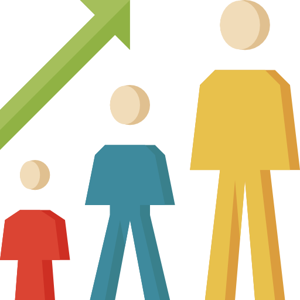
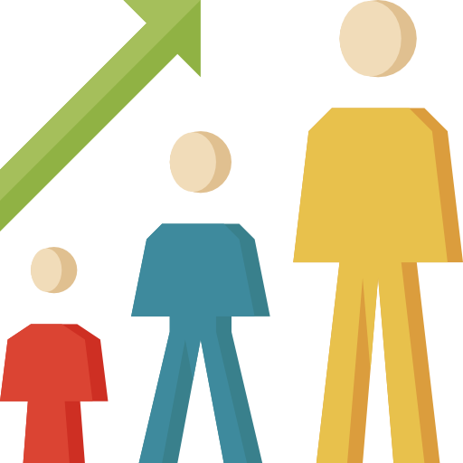

Hi there 🙌
안녕하세요? 백엔드 개발자 강시혁(제임스)입니다
코딩을 하며, 시간과 열정을 다해서 몰입한 경험이 있습니다.
일상에서 얻는 아이디어를 바탕으로 취미처럼 프로그래밍을 했습니다.
문제를 해결하고, 목표한 바를 이루었을 때 느꼈던 성취감은 잊을 수 없습니다.
이러한 매력에 빠지면서 개발 분야의 전문성을 갖추기로 결심했습니다.
현재는 다양한 가치들을 연결하기 위해 고민하는 개발자입니다.
동료들이 갖는 가치(강점)를 찾고, 서로 연결해서 팀 시너지를 만듭니다.
고객이 원하는 가치와 제품이 줄 수 있는 가치를 연결하기 위해 끊임없이 고민합니다.


 
